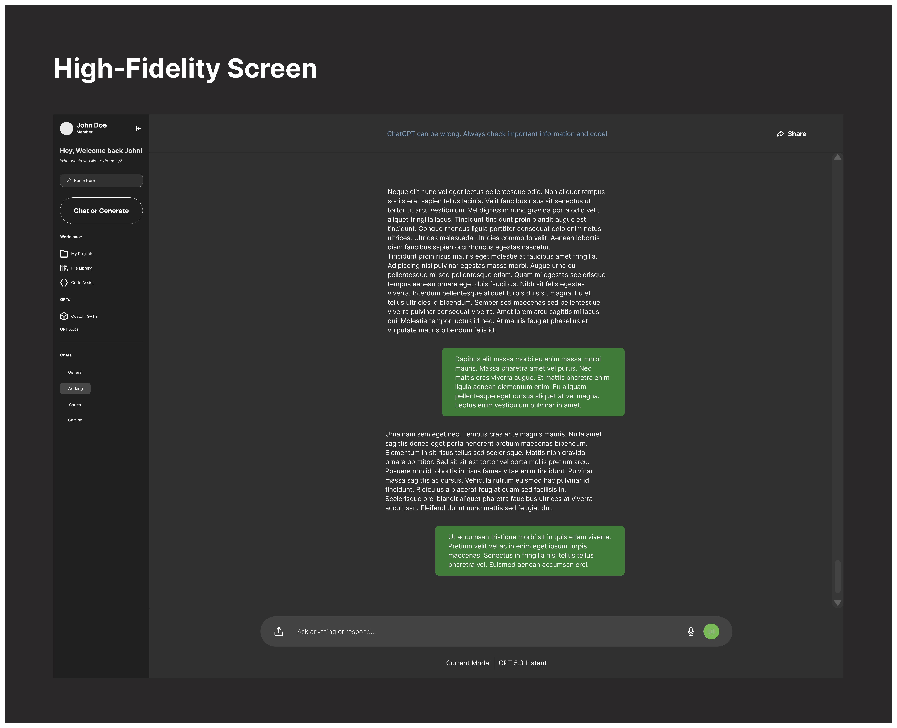

Case Study
Design System Iteration & Refinement w/ ChatGPT
A focused redesign of the active chat workspace to improve navigation clarity, action hierarchy, and cognitive load.
Overview
Purpose
I redesigned the active chat workspace by reducing redundant entry points, clarifying navigation, and simplifying where key actions live.
Note: Active chat workspace only — not onboarding.
Problem
What I Found
- Redundant sidebar and workspace actions
- Feature-led navigation instead of intent-led navigation
- Unclear separation between user spaces and system tools
- Too many contextual actions competing for attention
Solution
What Changed
- Reworked the sidebar around user intent
- Separated user-owned spaces from system capabilities
- Moved secondary actions into chat-level ellipsis menus
- Kept share as the primary visible chat action
- Refined labels for clarity over cleverness
Impact
Product Value
The redesign makes the workspace easier to scan, easier to understand, and more predictable to use.
Result: cleaner information architecture, reduced cognitive overhead, and a more scalable action model.
Design
Design Screens

